ボルト（0.9 倍）と並べて、大きさの関係を見ています。ボルトの設定画は preview.html
柱の上の運転席が頭。ランプの目にまぶたの鉄板（気難しい）。長い腕（ジブ）とフックで指さす・差し出す。ヘルメットを持ち上げて挨拶
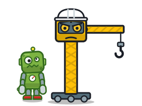
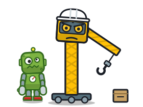
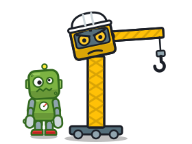
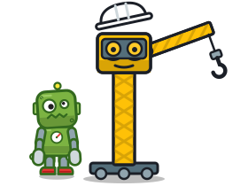
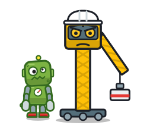
ずんぐりしたボイラーにキャタピラと2本のクレーン腕。パイプのひげ・圧力計の鼻。煙突が帽子。腕を組める
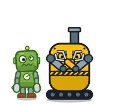
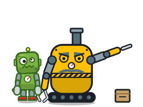
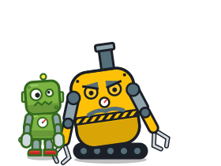
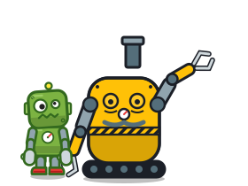
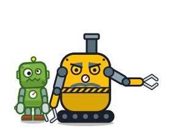
じょうごのノズル・看板の板の翼・色違いのドラム缶3段・洗濯機の扉の窓・バケツの先端。ガラクタの寄せ集め
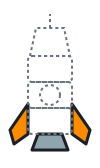
今の上部の背景のロケットを、テープの継ぎ目と手描きの番号で手作りに寄せたもの
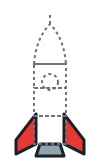
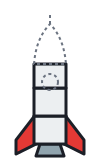
| 工場長 1 天井クレーン | 工場長 2 ボイラー親方 | |
|---|---|---|
| 力関係（大きさ） | ◎ 背が高く、見上げる構図になる | ○ 横に大きい |
| 身振り | ○ 指さす・差し出すは長い腕で明快。腕組みはできない（ジブを畳む） | ◎ 2本の腕で腕組み・指さす・差し出すが人らしい |
| 工場らしさ・ノルマとの結びつき | ◎ クレーンが部品を吊って渡す＝取引が一目でわかる | ○ 工場の機械だが、渡す動きは手渡し |
| 小さく表示したとき | ○ 細長い。運転席が小さくなる | ◎ かたまりで読める |
| ロケット 1 ドラム缶 | ロケット 2 赤白 | |
|---|---|---|
| 手作り感・ガラクタから作る話 | ◎ 設計図とガラクタの話に直結 | ○ 継ぎ目と番号だけ |
| 完成形のわかりやすさ（ロケットだと一目で） | ○ 色が多く、ややごちゃつく | ◎ 赤白でロケットの記号が強い |
| 今のゲームとのつながり | △ 上部の背景・共有カード・ロゴ周りを描き直す | ◎ 今の絵を描き直すだけで済む |
おすすめ: 工場長は 1 天井クレーン（部品を吊って渡す＝取引が言葉なしで伝わる。腕組みの代わりにジブを畳んで「待て」）。 ロケットは 2 赤白 をベースに、ドラム缶・バケツの先端など 1 の部品を少し混ぜる案（ロケットらしさを保ちつつ手作り感を足す）。